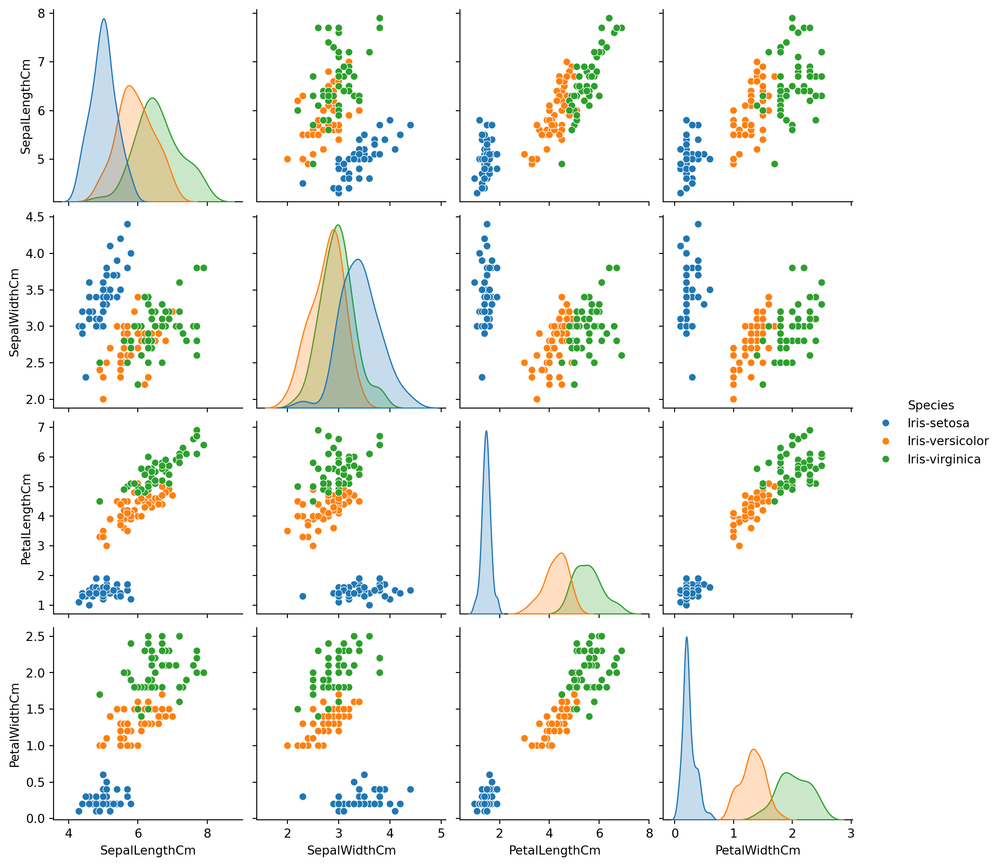
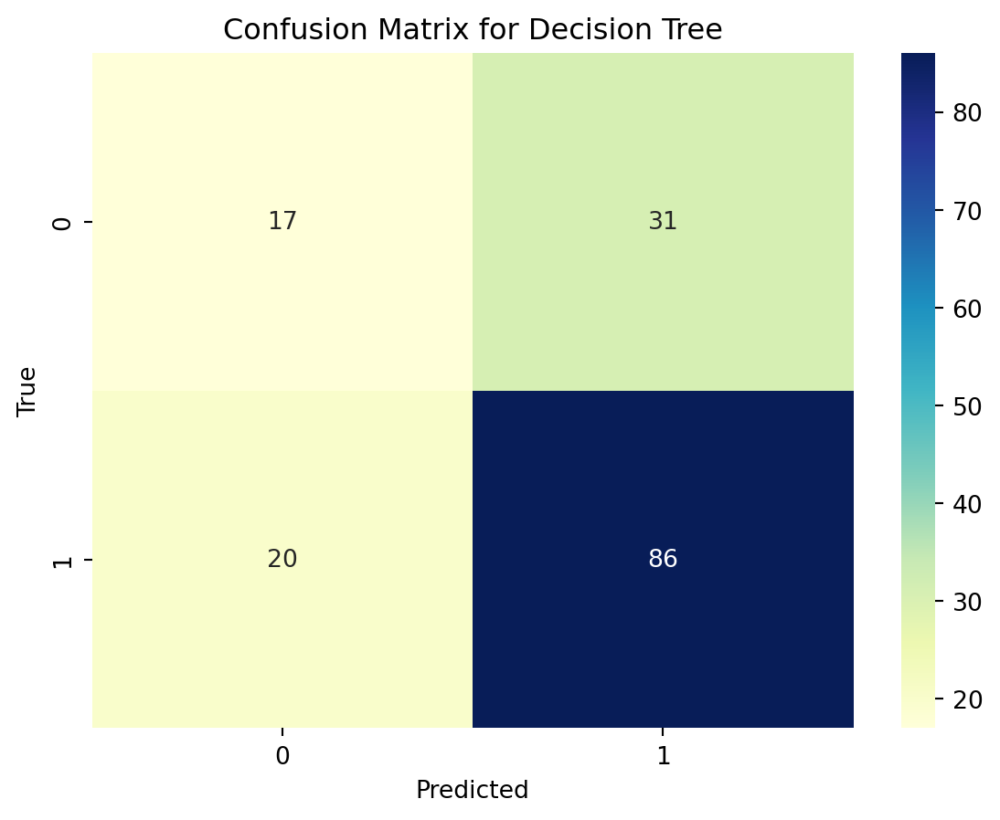

Code
from sklearn.datasets import load_iris
data = load_iris()
X = data.data
y = data.targetImage from the source: Analytics Yogi: K-Nearest Neighbors (KNN) Python Examples
The Classification algorithm, as a Supervised Learning technique, is employed to categorize new observations based on the knowledge gained from training data. In the classification process, the program utilizes a provided dataset or observations to learn how to assign new observations to distinct classes or groups, such as 0 or 1, red or blue, yes or no, spam or not spam, and so on. Terms like targets, labels, or categories are used interchangeably to denote these classes. As a supervised learning technique, the Classification algorithm requires labeled input data, encompassing both input and output information. The classification process involves transferring a discrete output function \(f(y)\) to an input variable \((x)\).
In simpler terms, classification serves as a form of pattern recognition, wherein classification algorithms analyze training data to identify similar patterns in new datasets.
Before we dive into classification algorithms, we need to set up our environment. We’ll be using the following (main) Python libraries:
scikit-learn: This library provides a wide range of tools for building machine learning models.
matplotlib and seaborn: These libraries will help us create visualizations.
For this demonstration, we will use the famous Iris dataset, which contains samples of three different species of iris flowers. The goal is to classify each sample into one of these species.
from sklearn.datasets import load_iris
data = load_iris()
X = data.data
y = data.targetimport matplotlib.pyplot as plt
import seaborn as sns
sns.scatterplot(x=X[:, 0], y=X[:, 1], hue=data.target_names[y])
plt.xlabel(data.feature_names[0])
plt.ylabel(data.feature_names[1])
plt.title("Iris Dataset: Sepal Length vs Sepal Width")
plt.show()
This plot shows the separation of iris flowers based on their sepal length and sepal width.
Various classification methods can be employed depending on the characteristics of the dataset under consideration. This variability stems from the extensive nature of the study of classification in statistics. Below lists the common four machine learning algorithms.
As a popular supervised machine learning algorithm, Naïve Bayes classifier is used for classification tasks such as text classification. It belongs to the family of generative learning algorithms, which means that it models the distribution of inputs for a given class or category. This modeling relies on the assumption that, given the class, the features of the input data are conditionally independent, facilitating swift and accurate predictions.
In statistics, Naïve Bayes classifiers are considered as simple probabilistic classifiers that apply Bayes’ theorem. This theorem is based on the probability of a hypothesis, given the data. The Naïve Bayes classifier makes the simplifying assumption that all features in the input data are independent, a condition not always met in practical scenarios. Nevertheless, despite this simplification, the naive Bayes classifier is extensively employed due to its efficiency and commendable performance across various real-world applications.
Bayes theorem provides a way of computing posterior probability \(P(c|x)\) from \(P(c)\), \(P(x)\) and \(P(x|c)\). Look at the equation below
\[ P(c | x) = \frac{P(x | c) P(c)}{P(x)} \]
Where,
\(P(c|x)\) is the posterior probability of class (c, target) given predictor (x, attributes).
\(P(c)\) is the prior probability of class.
\(P(x|c)\) is the likelihood which is the probability of the predictor given class.
\(P(x)\) is the prior probability of the predictor.
from sklearn.model_selection import train_test_split
from sklearn.naive_bayes import GaussianNB
from sklearn.metrics import accuracy_score, confusion_matrix, classification_report
# Split the dataset into training and testing sets
X_train, X_test, y_train, y_test = train_test_split(X, y, test_size=0.2, random_state=42)
# Initialize the Gaussian Naive Bayes classifier
naive_bayes_classifier = GaussianNB()
# Train the classifier
naive_bayes_classifier.fit(X_train, y_train)
# Make predictions on the test set
y_pred = naive_bayes_classifier.predict(X_test)
# Evaluate the classifier's performance
accuracy = accuracy_score(y_test, y_pred)
conf_matrix = confusion_matrix(y_test, y_pred)
classification_rep = classification_report(y_test, y_pred)
# Display results
print(f'Accuracy: {accuracy:.2f}\n')
print('Confusion Matrix:')
print(conf_matrix)
print('\nClassification Report:')
print(classification_rep)
# Visualize the decision boundary (2D projection for simplicity)
plt.figure(figsize=(8, 6))
# Plot training points
for i, c in zip(range(3), ['red', 'green', 'blue']):
plt.scatter(X_train[y_train == i, 0], X_train[y_train == i, 1], c=c, label=f'Class {i}', edgecolors='k')
# Plot testing points
for i, c in zip(range(3), ['red', 'green', 'blue']):
plt.scatter(X_test[y_test == i, 0], X_test[y_test == i, 1], c=c, marker='x', s=150, linewidth=2)
plt.title('Naive Bayes Classifier - Iris Dataset')
plt.xlabel('Feature 1')
plt.ylabel('Feature 2')
plt.legend()
plt.show()Accuracy: 1.00
Confusion Matrix:
[[10 0 0]
[ 0 9 0]
[ 0 0 11]]
Classification Report:
precision recall f1-score support
0 1.00 1.00 1.00 10
1 1.00 1.00 1.00 9
2 1.00 1.00 1.00 11
accuracy 1.00 30
macro avg 1.00 1.00 1.00 30
weighted avg 1.00 1.00 1.00 30

This visualization demonstrates Naive Bayes Classifier in action on the Iris Dataset, with data points grouped into three classes.
Below are the preview of the real-world Iris dataset with the following columns:
#importing libraries
import numpy as np # linear algebra
import pandas as pd # data processing, CSV file I/O (e.g. pd.read_csv)
import seaborn as sns
import matplotlib.pyplot as plt
from sklearn.datasets import load_iris
df= pd.read_csv("Iris.csv")
df.drop("Id",axis=1,inplace=True) #droping id
df.head(5)| SepalLengthCm | SepalWidthCm | PetalLengthCm | PetalWidthCm | Species | |
|---|---|---|---|---|---|
| 0 | 5.1 | 3.5 | 1.4 | 0.2 | Iris-setosa |
| 1 | 4.9 | 3.0 | 1.4 | 0.2 | Iris-setosa |
| 2 | 4.7 | 3.2 | 1.3 | 0.2 | Iris-setosa |
| 3 | 4.6 | 3.1 | 1.5 | 0.2 | Iris-setosa |
| 4 | 5.0 | 3.6 | 1.4 | 0.2 | Iris-setosa |
sns.FacetGrid(df, hue="Species", height=5).map(plt.scatter, "SepalLengthCm", "SepalWidthCm").add_legend()The plot shows the scatterplot by coloring species
#let Create a pair plot of some columns
sns.pairplot(df.iloc[:,:],hue='Species') # graph also tell us about the the realationship between the two columns
The plot shows the pair plot of the Iris dataset with main column feature by species
The aim is to identify the customer segments to whom the loan can be granted using the “loan.csv” dataset, below is the preview of the top five rows of the dataset:
#Importing the Libraries
import pandas as pd
import numpy as np
import matplotlib.pyplot as plt
import seaborn as sns
#Reading the dataset
loan_dataset = pd.read_csv("train_KNN_DT.csv")
loan_dataset.head()| Loan_ID | Gender | Married | Dependents | Education | Self_Employed | ApplicantIncome | CoapplicantIncome | LoanAmount | Loan_Amount_Term | Credit_History | Property_Area | Loan_Status | |
|---|---|---|---|---|---|---|---|---|---|---|---|---|---|
| 0 | LP001002 | Male | No | 0 | Graduate | No | 5849 | 0.0 | NaN | 360.0 | 1.0 | Urban | Y |
| 1 | LP001003 | Male | Yes | 1 | Graduate | No | 4583 | 1508.0 | 128.0 | 360.0 | 1.0 | Rural | N |
| 2 | LP001005 | Male | Yes | 0 | Graduate | Yes | 3000 | 0.0 | 66.0 | 360.0 | 1.0 | Urban | Y |
| 3 | LP001006 | Male | Yes | 0 | Not Graduate | No | 2583 | 2358.0 | 120.0 | 360.0 | 1.0 | Urban | Y |
| 4 | LP001008 | Male | No | 0 | Graduate | No | 6000 | 0.0 | 141.0 | 360.0 | 1.0 | Urban | Y |
loan_dataset.isna().sum()Loan_ID 0
Gender 13
Married 3
Dependents 15
Education 0
Self_Employed 32
ApplicantIncome 0
CoapplicantIncome 0
LoanAmount 22
Loan_Amount_Term 14
Credit_History 50
Property_Area 0
Loan_Status 0
dtype: int64Loan_Id: Each applicant is assigned a unique Loan_Id for individual identification purposes.
Gender: This field indicates the gender of the applicant.
Married: This field indicates whether the applicant is currently married.
Dependents: This field signifies whether the applicant is financially dependent on someone else.
Education: This field provides information about the educational status of the applicant.
Self_Employed: This field indicates whether the applicant is self-employed.
ApplicantIncome: This field denotes the income of the applicant.
CoApplicantIncome: This field represents the income of the co-applicant, where a co-applicant is an individual applying jointly with the borrower for a loan.
Loan_Amount: This field indicates the amount of the loan that the applicant borrows from the bank.
Loan_Amount_Term: This field represents the term of the loan amount for each applicant. A term amount loan is characterized by a fixed amount and a predetermined repayment schedule, featuring either a fixed or floating interest rate.
Credit_History: This field signifies the credit history of each applicant, documenting their responsible repayment of debts.
Loan_Status: This field indicates whether the loan is approved or not, denoted by ‘Y’ for approved and ‘N’ for not approved.
loan_dataset['Gender'] = loan_dataset['Gender'].fillna(loan_dataset['Gender'].mode().values[0])
loan_dataset['Married'] = loan_dataset['Married'].fillna(loan_dataset['Married'].mode().values[0])
loan_dataset['Dependents'] = loan_dataset['Dependents'].fillna(loan_dataset['Dependents'].mode().values[0])
loan_dataset['Self_Employed'] = loan_dataset['Self_Employed'].fillna(loan_dataset['Self_Employed'].mode().values[0])
loan_dataset['LoanAmount'] = loan_dataset['LoanAmount'].fillna(loan_dataset['LoanAmount'].mean())
loan_dataset['Loan_Amount_Term'] = loan_dataset['Loan_Amount_Term'].fillna(loan_dataset['Loan_Amount_Term'].mode().values[0] )
loan_dataset['Credit_History'] = loan_dataset['Credit_History'].fillna(loan_dataset['Credit_History'].mode().values[0] )
# Drop the ID column
loan_dataset.drop('Loan_ID', axis=1, inplace=True)
loan_dataset.head()| Gender | Married | Dependents | Education | Self_Employed | ApplicantIncome | CoapplicantIncome | LoanAmount | Loan_Amount_Term | Credit_History | Property_Area | Loan_Status | |
|---|---|---|---|---|---|---|---|---|---|---|---|---|
| 0 | Male | No | 0 | Graduate | No | 5849 | 0.0 | 146.412162 | 360.0 | 1.0 | Urban | Y |
| 1 | Male | Yes | 1 | Graduate | No | 4583 | 1508.0 | 128.000000 | 360.0 | 1.0 | Rural | N |
| 2 | Male | Yes | 0 | Graduate | Yes | 3000 | 0.0 | 66.000000 | 360.0 | 1.0 | Urban | Y |
| 3 | Male | Yes | 0 | Not Graduate | No | 2583 | 2358.0 | 120.000000 | 360.0 | 1.0 | Urban | Y |
| 4 | Male | No | 0 | Graduate | No | 6000 | 0.0 | 141.000000 | 360.0 | 1.0 | Urban | Y |
from sklearn.model_selection import train_test_split
from sklearn.neighbors import KNeighborsClassifier
from sklearn import tree
from sklearn.metrics import accuracy_score#Convert some object data type to int
gender = {"Female": 0, "Male": 1}
yes_no = {'No' : 0,'Yes' : 1}
dependents = {'0':0,'1':1,'2':2,'3+':3}
education = {'Not Graduate' : 0, 'Graduate' : 1}
property = {'Semiurban' : 0, 'Urban' : 1,'Rural' : 2}
output = {"N": 0, "Y": 1}
loan_dataset['Gender'] = loan_dataset['Gender'].replace(gender)
loan_dataset['Married'] = loan_dataset['Married'].replace(yes_no)
loan_dataset['Dependents'] = loan_dataset['Dependents'].replace(dependents)
loan_dataset['Education'] = loan_dataset['Education'].replace(education)
loan_dataset['Self_Employed'] = loan_dataset['Self_Employed'].replace(yes_no)
loan_dataset['Property_Area'] = loan_dataset['Property_Area'].replace(property)
loan_dataset['Loan_Status'] = loan_dataset['Loan_Status'].replace(output)
loan_dataset.head()| Gender | Married | Dependents | Education | Self_Employed | ApplicantIncome | CoapplicantIncome | LoanAmount | Loan_Amount_Term | Credit_History | Property_Area | Loan_Status | |
|---|---|---|---|---|---|---|---|---|---|---|---|---|
| 0 | 1 | 0 | 0 | 1 | 0 | 5849 | 0.0 | 146.412162 | 360.0 | 1.0 | 1 | 1 |
| 1 | 1 | 1 | 1 | 1 | 0 | 4583 | 1508.0 | 128.000000 | 360.0 | 1.0 | 2 | 0 |
| 2 | 1 | 1 | 0 | 1 | 1 | 3000 | 0.0 | 66.000000 | 360.0 | 1.0 | 1 | 1 |
| 3 | 1 | 1 | 0 | 0 | 0 | 2583 | 2358.0 | 120.000000 | 360.0 | 1.0 | 1 | 1 |
| 4 | 1 | 0 | 0 | 1 | 0 | 6000 | 0.0 | 141.000000 | 360.0 | 1.0 | 1 | 1 |
# Drop "Loan_Status" and assign it to target variable.
y = loan_dataset.Loan_Status
print(y)
x = loan_dataset.drop('Loan_Status', axis=1, inplace=False)
#Splitting the dataset into train and test set
X_train, X_test, Y_train, Y_test = train_test_split(x, y, test_size = 0.25, random_state=38, stratify = y)0 1
1 0
2 1
3 1
4 1
..
609 1
610 1
611 1
612 1
613 0
Name: Loan_Status, Length: 614, dtype: int64knn = KNeighborsClassifier(n_neighbors = 5)
knn.fit(X_train, Y_train)KNeighborsClassifier()In a Jupyter environment, please rerun this cell to show the HTML representation or trust the notebook.
KNeighborsClassifier()
prediction_knn = knn.predict(X_test)
print("Prediction for test set: {}".format(prediction_knn))
print('Accuracy of the model: {:.2f}'.format(accuracy_score(Y_test, prediction_knn)*100))Prediction for test set: [1 1 0 1 0 1 1 1 1 1 1 0 1 1 1 0 1 1 1 1 1 1 1 1 1 1 1 1 1 0 1 1 1 1 1 1 1
1 0 1 1 1 1 1 1 1 1 1 0 1 1 1 1 1 1 1 0 1 1 1 1 1 0 1 0 1 1 1 1 0 1 1 1 1
1 1 1 1 0 1 1 0 1 1 1 1 1 0 1 1 1 1 0 1 1 1 1 1 1 1 1 1 1 1 1 0 1 1 1 1 1
1 1 1 1 1 1 1 0 1 0 1 1 0 1 1 1 1 0 1 1 1 1 1 1 1 1 1 0 1 0 1 1 1 1 1 1 1
1 1 1 0 1 1]
Accuracy of the model: 65.58#Actual value and the predicted value
diff_knn = pd.DataFrame({'Actual value': Y_test, 'Predicted value': prediction_knn})
diff_knn| Actual value | Predicted value | |
|---|---|---|
| 263 | 1 | 1 |
| 395 | 1 | 1 |
| 226 | 0 | 0 |
| 413 | 1 | 1 |
| 403 | 1 | 0 |
| ... | ... | ... |
| 352 | 1 | 1 |
| 238 | 1 | 1 |
| 248 | 1 | 0 |
| 104 | 1 | 1 |
| 8 | 1 | 1 |
154 rows × 2 columns
#Confusion matrix and classification report
from sklearn import metrics
from sklearn.metrics import classification_report, confusion_matrix
con_mat = confusion_matrix(Y_test, prediction_knn)
print(con_mat)
sns.heatmap(con_mat, annot=True, fmt="d")
plt.title('Confusion Matrix for KNN')
plt.xlabel('Predicted')
plt.ylabel('True')
print(classification_report(Y_test, prediction_knn))[[ 9 39]
[14 92]]
precision recall f1-score support
0 0.39 0.19 0.25 48
1 0.70 0.87 0.78 106
accuracy 0.66 154
macro avg 0.55 0.53 0.51 154
weighted avg 0.61 0.66 0.61 154
dTree = tree.DecisionTreeClassifier()
dTree.fit(X_train, Y_train)DecisionTreeClassifier()In a Jupyter environment, please rerun this cell to show the HTML representation or trust the notebook.
DecisionTreeClassifier()
prediction_dt = dTree.predict(X_test)
print("Prediction for test set: {}".format(prediction_dt))
print('Accuracy of the model: {:.2f}'.format(accuracy_score(Y_test, prediction_dt)*100))Prediction for test set: [1 1 1 1 1 1 1 1 1 1 0 1 1 1 0 1 1 0 0 1 1 1 1 1 0 1 1 1 1 1 0 0 1 1 0 0 0
1 0 1 0 1 1 1 1 0 1 1 1 1 0 1 0 1 1 1 0 1 1 1 1 0 1 1 1 1 1 0 1 1 0 1 1 0
1 1 1 1 0 1 1 1 1 1 1 1 1 1 1 1 1 1 1 0 1 1 1 1 0 0 1 1 1 1 1 1 1 0 1 1 1
1 1 0 0 1 0 1 1 0 1 1 1 1 1 1 1 1 1 1 0 1 1 0 0 0 1 1 1 0 1 1 1 1 0 1 1 1
1 1 1 0 1 1]
Accuracy of the model: 67.53#Actual value and the predicted value
diff_dt = pd.DataFrame({'Actual value': Y_test, 'Predicted value': prediction_dt})
diff_dt| Actual value | Predicted value | |
|---|---|---|
| 263 | 1 | 1 |
| 395 | 1 | 1 |
| 226 | 0 | 1 |
| 413 | 1 | 1 |
| 403 | 1 | 1 |
| ... | ... | ... |
| 352 | 1 | 1 |
| 238 | 1 | 1 |
| 248 | 1 | 0 |
| 104 | 1 | 1 |
| 8 | 1 | 1 |
154 rows × 2 columns
#Confusion matrix and classification report
con_mat = confusion_matrix(Y_test, prediction_dt)
print(con_mat)
sns.heatmap(con_mat, annot=True, fmt="d")
plt.title('Confusion Matrix for Decision Tree')
plt.xlabel('Predicted')
plt.ylabel('True')
print(classification_report(Y_test, prediction_dt))[[17 31]
[19 87]]
precision recall f1-score support
0 0.47 0.35 0.40 48
1 0.74 0.82 0.78 106
accuracy 0.68 154
macro avg 0.60 0.59 0.59 154
weighted avg 0.65 0.68 0.66 154

1. KNN: KNN gve the accuracy of 65.58%.
2. Decision Tree: Decision tree gave the accuracy of 67.53%.
In this blog post, we explored classification algorithms in machine learning, implemented them in Python, and visualized their decision boundaries. We used the Iris and Load datasets as examples and showcased popular classifiers like Naive Bayes, Logistic Regression, K-Nearest Neighbors, and Decision Tree.
Understanding classification algorithms and their performance is crucial for building accurate machine learning models. Python’s extensive libraries and visualization capabilities make it a powerful tool for this task. Experiment with different datasets and classifiers to gain a deeper understanding of classification in machine learning.